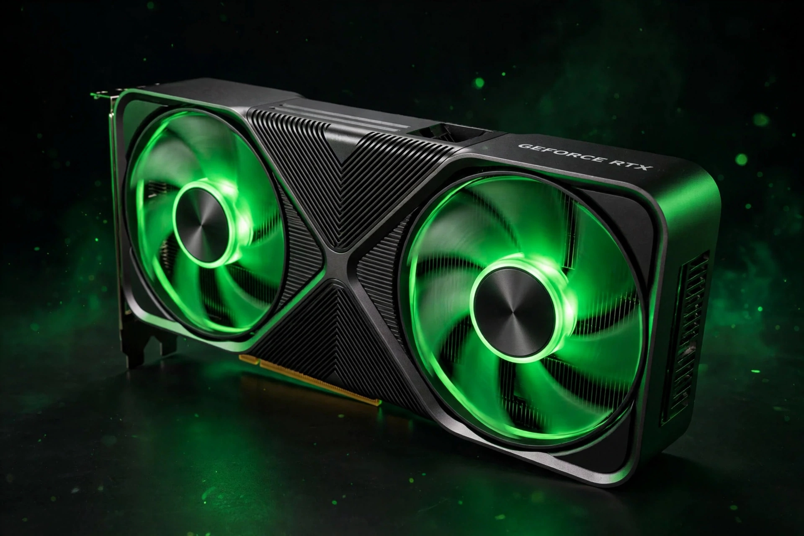

Game-changing speed. Powered by NVIDIA Blackwell architecture and DLSS 4 with Multi Frame Generation — the ultimate platform for gamers and creators.
Shop All RTX 50 Series
| GPU | Built for | Memory | From (MSRP, as remembered) |
|---|---|---|---|
| GeForce RTX 5090 | 4K flagship gaming & creation | 32 GB GDDR7 | $1,999 |
| GeForce RTX 5080 | High-end 4K gaming | 16 GB GDDR7 | $999 |
| GeForce RTX 5070 Ti | 1440p / entry 4K | 16 GB GDDR7 | $749 |
| GeForce RTX 5070 | 1440p gaming | 12 GB GDDR7 | $549 |
| GeForce RTX 5060 Ti / 5060 | 1080p–1440p mainstream | 16/8 GB GDDR7 | $429 / $299 |
AI super resolution and Multi Frame Generation multiply frame rates while keeping image quality sharp.
Fourth-gen RT Cores and neural rendering deliver cinematic lighting in the biggest games.
Creator acceleration in 100+ apps, AV1 encoding, and AI noise removal for streamers.
The same Blackwell architecture in thin laptops, with Max-Q efficiency technologies.
Stream your own PC library from cloud RTX rigs, up to 4K on the Ultimate tier.
One place for drivers, game optimisation, performance overlays and rewards.
NVIDIA Reflex reduces system latency so clicks land sooner — in competitive shooters, milliseconds are the match.